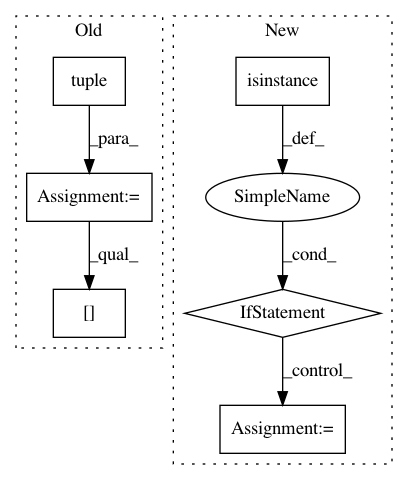

16474aee0c575e615c78d32f2a170c3d7f8f0082,autokeras/graph.py,Graph,produce_model,#Graph#,75
Before Change
def produce_model(self):
input_shape = get_int_tuple(self.model.inputs[0].shape[1:])
input_tensor = Input(shape=tuple(input_shape))
input_id = self.node_to_id[self.model.inputs[0]]
output_id = self.node_to_id[self.model.outputs[0]]
id_to_tensor = {input_id: input_tensor}
q = Queue()
q.put(input_id)
while not q.empty():
u = q.get()
for v, edge_id in self.adj_list[u]:
layer = self.edge_list[edge_id]
if edge_id in self.old_edge_ids:
copied_layer = copy_layer(layer, get_int_tuple(id_to_tensor[u].shape))
temp_tensor = copied_layer(id_to_tensor[u])
else:
temp_tensor = layer(id_to_tensor[u])
id_to_tensor[v] = temp_tensor
After Change
for u, edge_id in self.reverse_adj_list[v]:
layer = self.edge_list[edge_id]
if isinstance(layer, WeightedAdd):
edge_input_tensor = list(map(lambda x: id_to_tensor[x], self.edge_id_to_input_ids[edge_id]))
else:
edge_input_tensor = id_to_tensor[u]
if edge_id in self.old_edge_ids:
new_layer = copy_layer(layer)
else:
new_layer = layer
In pattern: SUPERPATTERN
Frequency: 4
Non-data size: 6
Instances
Project Name: keras-team/autokeras
Commit Name: 16474aee0c575e615c78d32f2a170c3d7f8f0082
Time: 2017-12-30
Author: jhfjhfj1@gmail.com
File Name: autokeras/graph.py
Class Name: Graph
Method Name: produce_model
Project Name: keras-team/keras
Commit Name: 023331ec2a7b0086abfc81eca16c84a1692ee653
Time: 2017-02-09
Author: francois.chollet@gmail.com
File Name: keras/layers/convolutional.py
Class Name: Cropping2D
Method Name: __init__
Project Name: keras-team/keras
Commit Name: 023331ec2a7b0086abfc81eca16c84a1692ee653
Time: 2017-02-09
Author: francois.chollet@gmail.com
File Name: keras/layers/convolutional.py
Class Name: Cropping3D
Method Name: __init__